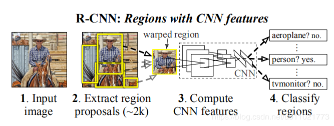
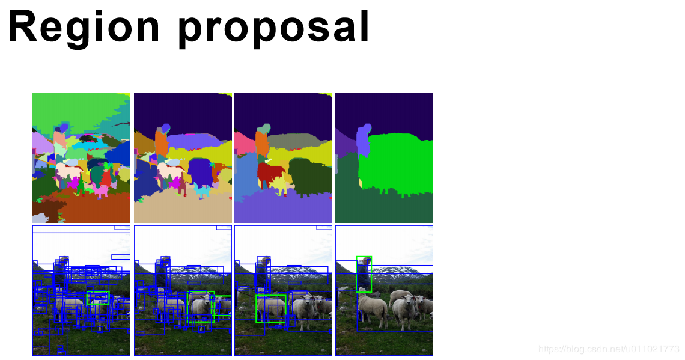
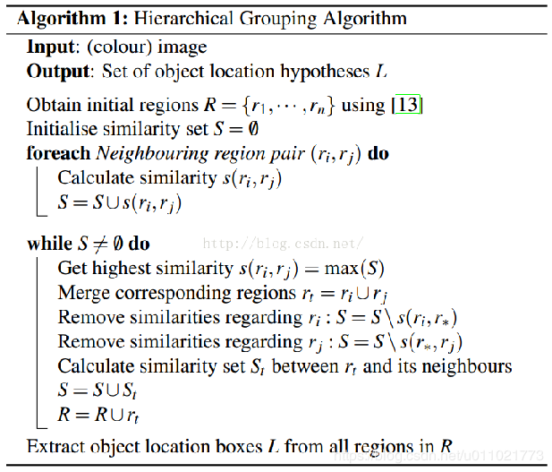
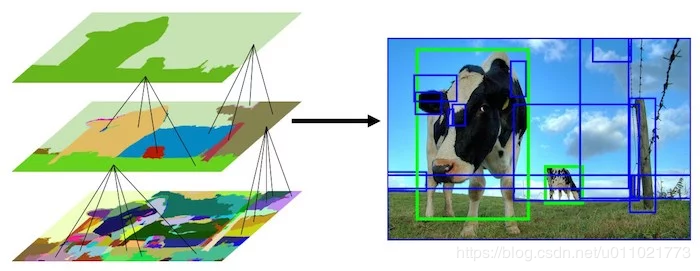
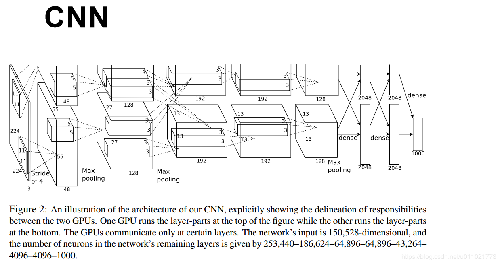
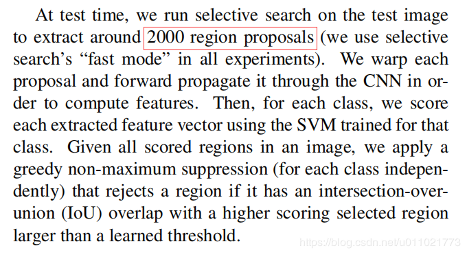
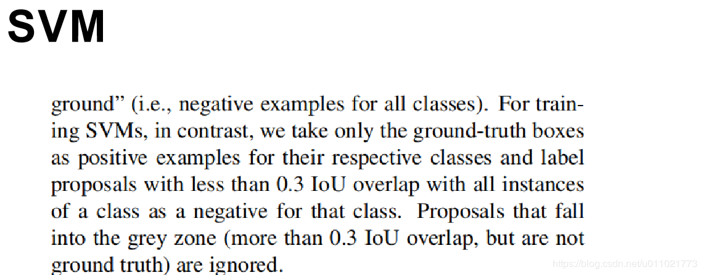
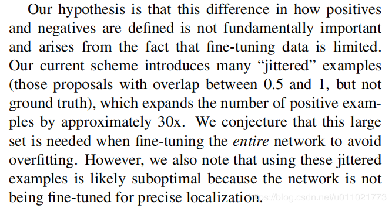
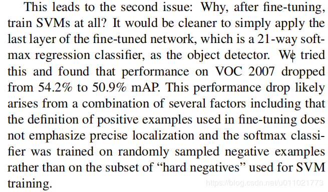
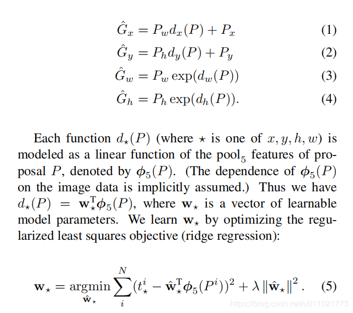

)
rcnn首先会做一个region
proposal，也就是任意的找到一些疑似完整物体的区域，这一步是任意的，根据梯度信息找到一些边缘，然后就圈出来了。这一步会找到非常多的区域作为候选框，给接下来的分类提供素材。论文说的是找了两千多个
接着把那些候选框一个一个输入神经网络，算出特征
接着把算出的特征交给svm去做分类，得到分类与置信度。
最后每个类别在训练出四个向量，保证预测的时候特征 _这四个向量可以得到x,y,w,h，这样坐标的缩放和偏移量也就算出来了。

所谓的候选区域推荐其实就是根据梯度信息找到一些边界，然后选出一个个疑似完整的物体。 而RCNN的region proposal用的是selective
search的方法，这种方法说来也简单，就是每两个相邻区域计算相似度。

如果相似度大于阈值就合并，接着循环，直到不能再合并为止。而一开始是每个像素点为一个区域所以这个过程就是由点逐步变大的过程。

这一步做完了，图中就会出现很多的候选框，然后每个候选框经过神经网络，算出特征。

他这个网络就用的是alexnet，模型也直接拿的imagenet上训练好了的，这样他就不需要从头训练，只需要对输出类别进行一下finetune就行了。由于alexnet输入是固定的227_227的，所以刚才region
proposal出来的每一个候选框都resize成227*227输入到这个网络中，算出4096维的特征。注意啊，这个图上是224的，实际上是错误的，因为和alexnet论文下面自相矛盾了，他下面输出是55，而步长是4，核大小是11，所以输入必须是227才能被整除。因为我们这一步只需要提取特征，而alexnet是为了在imagenet上进行分类，所以最后又加了一层1000维的全连接，是因为imagenet是有1000个分类，所以弄了1000维的全连接加上softmax，我们这一步只需要提取特征，就不需要softmax了，所以我们这一步得到的结果是每个候选框算出一个4096维的特征，假设有n个候选框就会算出n个4096维的特征。

而实际上论文也说了，这个n就是2000左右，我们会找两千个左右的区域。所以最后经过CNN会出现2000个4096维的特征向量。
这个神经网络训练的时候加了一层21维的全连接层以及softmax，因为PASCAL
VOC比赛要求的是20种分类，那么加上背景就是21种了。这里我们可以根据自己的需要任意改变这个输出种类。他在训练的时候每个区域判断和groundtruth的IOU，就是交集比上并集，如果IOU>0.5就认为是相应的物体，小于就当做背景。然后学习率设的很小，只有0.001，因为是finetune的，每次迭代选了32个正样本，96个背景作为一个batch去训练。

最后拿着这些特征去训练SVM，SVM训练时候也是有讲究的，他的正样本直接取的是groundtruth了，而负样本采用的是IOU<0.3的proposal，中间的全部扔掉。

为什么要扔掉呢？他后面也写了，因为这个候选情况太多了，我们选择最有代表的样例就行了，不然的话因为允许有偏差，正样例数量可能会扩大30倍

也就是因为训练CNN时候用的正样本是IOU>0.5的，背景是IOU<0.5。而训练SVM的时候正样本就是IOU=1的，负样本是IOU<0.3的，就是这里对位置要求的严格，使得分类的准确率大大提升，所以最终选择使用加一步SVM的分类，而不是直接采用softmax进行分类。

分类结果出来以后就该算出准确位置了，因为这些候选框都是一开始第一步粗略挑选出来的，期初他并不知道类别，所以位置和大小也并不一定准确，所以接下来要找到这个框的精确位置。我们说精确位置，其实包含了框的位置和大小，所以我们要得到的也就是4个数字，分别是deltax，deltay，wscale，hscale，分别表示真实边框相对于预测的这个框左上角顶点偏移量，以及长宽的放大尺度。这四个值其实是能够根据特征学习出来的。因为我们上一层也就是CNN输出的是4096维的特征，这一层要输出的是4个数，假设我们有4个4096维的向量，和那4096维的特征相乘，假设特征是1行，4096列，而这个向量是4096行1列，那么乘出来就是1个数了。把这个数当做deltax，那么那个向量就是deltax的参数了，同样的道理，每个类别求出4个这样的向量，分别就是deltax，deltay，wscale，hscale的参数向量了。这个向量明显是可以学习的出来的，因为不同的特征代表物体不同区域，其实是有规律可循的，所以这个变换的向量也就一定可以学习的出来的。这个学习的过程其实就是边框回归。
回归训练的时候一定要用IOU>0.6的样本训练，太小了实在很难看出是什么，对于这种简单的线性参数干扰很大，所以这一步其实只适合用来微调，训练的时候一定要控制好IOU。
总结
有了这几步，RCNN的全部流程就出来了，先用selective search找到2000个region
proposal，再用finetune过的alexnet算出2000个4096维的特征，分别计算这2000个对应的类别和置信度，然后用bbox
regression去回归他准确的位置。